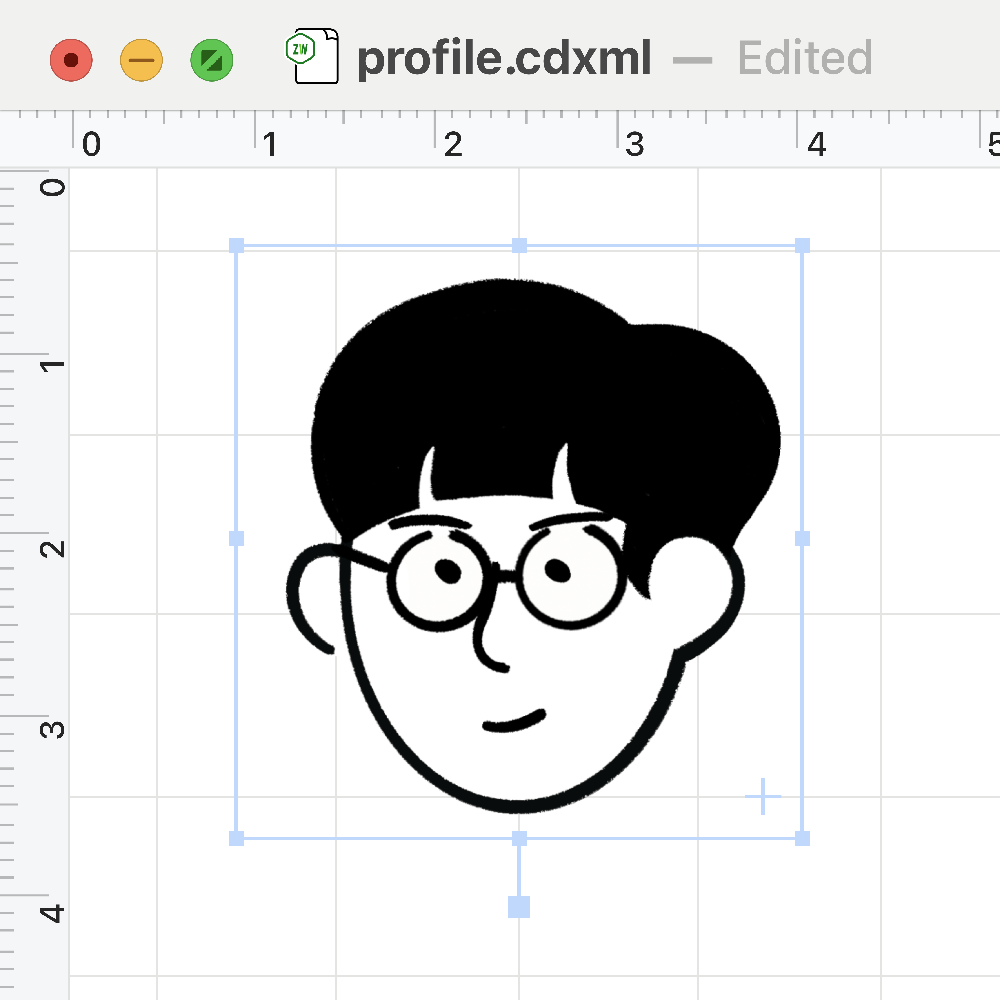

Zhe WANG, Ph.D.
a.k.a. Zit WONG | 王哲 | 왕철
Assistant Professor at Mori Lab., The University of Osaka.

News
| Jun 5, 2026 | 68.5k visits in last month. |
| Jan 17, 2026 | Thanks for 455k site visits in 2025! |
| Nov 11, 2025 | py.Aroma 5 is out now. |
Latest posts view all →
Contact
Research Center for Environmental Preservation
Division of Applied Chemistry, Graduate School of Engineering
2-4 Yamadaoka, Suita, Osaka, 565-0871, Japan